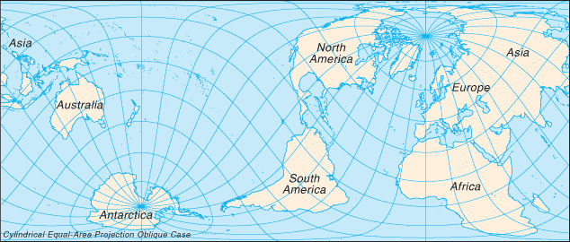

World |
 |
| Page last updated on October 01, 2015 |
|
 |
|
|
Introduction :: WORLD -
Globally, the 20th century was marked by: (a) two devastating world wars; (b) the Great Depression of the 1930s; (c) the end of vast colonial empires; (d) rapid advances in science and technology, from the first airplane flight at Kitty Hawk, North Carolina (US) to the landing on the moon; (e) the Cold War between the Western alliance and the Warsaw Pact nations; (f) a sharp rise in living standards in North America, Europe, and Japan; (g) increased concerns about environmental degradation including deforestation, energy and water shortages, declining biological diversity, and air pollution; (h) the onset of the AIDS epidemic; and (i) the ultimate emergence of the US as the only world superpower. The planet's population continues to explode: from 1 billion in 1820 to 2 billion in 1930, 3 billion in 1960, 4 billion in 1974, 5 billion in 1987, 6 billion in 1999, and 7 billion in 2012. For the 21st century, the continued exponential growth in science and technology raises both hopes (e.g., advances in medicine and agriculture) and fears (e.g., development of even more lethal weapons of war).
Geography :: WORLD -
The surface of the earth is approximately 70.9% water and 29.1% land. The former portion is divided into large water bodies termed oceans. The World Factbook recognizes and describes five oceans, which are in decreasing order of size: the Pacific Ocean, Atlantic Ocean, Indian Ocean, Southern Ocean, and Arctic Ocean.
The land portion is generally divided into several, large, discrete landmasses termed continents. Depending on the convention used, the number of continents can vary from five to seven. The most common classification recognizes seven, which are (from largest to smallest): Asia, Africa, North America, South America, Antarctica, Europe, and Australia. Asia and Europe are sometimes lumped together into a Eurasian continent resulting in six continents. Alternatively, North and South America are sometimes grouped as simply the Americas, resulting in a continent total of six (or five, if the Eurasia designation is used).
North America is commonly understood to include the island of Greenland, the isles of the Caribbean, and to extend south all the way to the Isthmus of Panama. The easternmost extent of Europe is generally defined as being the Ural Mountains and the Ural River; on the southeast the Caspian Sea; and on the south the Caucasus Mountains, the Black Sea, and the Mediterranean. Portions of Azerbaijan, Georgia, Kazakhstan, Russia, and Turkey fall within both Europe and Asia, but in every instance the larger section is in Asia. These countries are considered part of both continents. Armenia and Cyprus, which lie completely in Western Asia, are geopolitically European countries.
Asia usually incorporates all the islands of the Philippines, Malaysia, and Indonesia. The islands of the Pacific are often lumped with Australia into a "land mass" termed Oceania or Australasia. Africa's northeast extremity is frequently delimited at the Isthmus of Suez, but for geopolitical purposes, the Egyptian Sinai Peninsula is often included as part of Africa.
Although the above groupings are the most common, different continental dispositions are recognized or taught in certain parts of the world, with some arrangements more heavily based on cultural spheres rather than physical geographic considerations.
Physical Map of the World
total: 510.072 million sq km
land: 148.94 million sq km
water: 361.132 million sq km
note: 70.9% of the world's surface is water, 29.1% is land
land area about 16 times the size of the US
top fifteen World Factbook entities ranked by size: Pacific Ocean 155.557 million sq km; Atlantic Ocean 76.762 million sq km; Indian Ocean 68.556 million sq km; Southern Ocean 20.327 million sq km; Russia 17,098,242 sq km; Arctic Ocean 14.056 million sq km; Antarctica 14 million sq km; Canada 9,984,670 sq km; United States 9,826,675 sq km; China 9,596,960 sq km; Brazil 8,515,770 sq km; Australia 7,741,220 sq km; European Union 4,324,782 sq km; India 3,287,263 sq km; Argentina 2,780,400 sq km
top ten largest water bodies: Pacific Ocean 155.557 million sq km; Atlantic Ocean 76.762 million sq km; Indian Ocean 68.556 million sq km; Southern Ocean 20.327 million sq km; Arctic Ocean 14.056 million sq km; Coral Sea 4,184,100 sq km; South China Sea 3,595,900 sq km; Caribbean Sea 2.834 million sq km; Bering Sea 2.52 million sq km; Mediterranean Sea 2.469 million sq km
top ten largest landmasses: Asia 44,568,500 sq km; Africa 30.065 million sq km; North America 24.473 million sq km; South America 17.819 million sq km; Antarctica 14 million sq km; Europe 9.948 million sq km; Australia 7,741,220 sq km; Greenland 2,166,086 sq km; New Guinea 785,753 sq km; Borneo 751,929 sq km
top ten largest islands: Greenland 2,166,086 sq km; New Guinea (Indonesia, Papua New Guinea) 785,753 sq km; Borneo (Brunei, Indonesia, Malaysia) 751,929 sq km; Madagascar 587,713 sq km; Baffin Island (Canada) 507,451 sq km; Sumatra (Indonesia) 472,784 sq km; Honshu (Japan) 227,963 sq km; Victoria Island (Canada) 217,291 sq km; Great Britain (United Kingdom) 209,331 sq km; Ellesmere Island (Canada) 196,236 sq km
the land boundaries in the world total 251,060 km (not counting shared boundaries twice); two nations, China and Russia, each border 14 other countries
note: 46 nations and other areas are landlocked, these include: Afghanistan, Andorra, Armenia, Austria, Azerbaijan, Belarus, Bhutan, Bolivia, Botswana, Burkina Faso, Burundi, Central African Republic, Chad, Czech Republic, Ethiopia, Holy See (Vatican City), Hungary, Kazakhstan, Kosovo, Kyrgyzstan, Laos, Lesotho, Liechtenstein, Luxembourg, Macedonia, Malawi, Mali, Moldova, Mongolia, Nepal, Niger, Paraguay, Rwanda, San Marino, Serbia, Slovakia, South Sudan, Swaziland, Switzerland, Tajikistan, Turkmenistan, Uganda, Uzbekistan, West Bank, Zambia, Zimbabwe; two of these, Liechtenstein and Uzbekistan, are doubly landlocked
356,000 km
note: 95 nations and other entities are islands that border no other countries, they include: American Samoa, Anguilla, Antigua and Barbuda, Aruba, Ashmore and Cartier Islands, The Bahamas, Bahrain, Baker Island, Barbados, Bermuda, Bouvet Island, British Indian Ocean Territory, British Virgin Islands, Cabo Verde, Cayman Islands, Christmas Island, Clipperton Island, Cocos (Keeling) Islands, Comoros, Cook Islands, Coral Sea Islands, Cuba, Curacao, Cyprus, Dominica, Falkland Islands (Islas Malvinas), Faroe Islands, Fiji, French Polynesia, French Southern and Antarctic Lands, Greenland, Grenada, Guam, Guernsey, Heard Island and McDonald Islands, Howland Island, Iceland, Isle of Man, Jamaica, Jan Mayen, Japan, Jarvis Island, Jersey, Johnston Atoll, Kingman Reef, Kiribati, Madagascar, Maldives, Malta, Marshall Islands, Mauritius, Mayotte, Federated States of Micronesia, Midway Islands, Montserrat, Nauru, Navassa Island, New Caledonia, New Zealand, Niue, Norfolk Island, Northern Mariana Islands, Palau, Palmyra Atoll, Paracel Islands, Philippines, Pitcairn Islands, Puerto Rico, Saint Barthelemy, Saint Helena, Saint Kitts and Nevis, Saint Lucia, Saint Pierre and Miquelon, Saint Vincent and the Grenadines, Samoa, Sao Tome and Principe, Seychelles, Singapore, Sint Maarten, Solomon Islands, South Georgia and the South Sandwich Islands, Spratly Islands, Sri Lanka, Svalbard, Taiwan, Tokelau, Tonga, Trinidad and Tobago, Turks and Caicos Islands, Tuvalu, Vanuatu, Virgin Islands, Wake Island, Wallis and Futuna
a variety of situations exist, but in general, most countries make the following claims measured from the mean low-tide baseline as described in the 1982 UN Convention on the Law of the Sea: territorial sea - 12 nm, contiguous zone - 24 nm, and exclusive economic zone - 200 nm; additional zones provide for exploitation of continental shelf resources and an exclusive fishing zone; boundary situations with neighboring states prevent many countries from extending their fishing or economic zones to a full 200 nm
a wide equatorial band of hot and humid tropical climates, bordered north and south by subtropical temperate zones that separate two large areas of cold and dry polar climates
the greatest ocean depth is the Mariana Trench at 10,924 m in the Pacific Ocean
lowest point: Bentley Subglacial Trench (Antarctica) -2,555 m
note: in the oceanic realm, Challenger Deep in the Mariana Trench is the lowest point, lying -10,924 m below the surface of the Pacific Ocean
highest point: Mount Everest 8,850 m
top ten highest mountains (measured from sea level): Mount Everest (China-Nepal) 8,850 m; K2 (Pakistan) 8,611 m; Kanchenjunga (India-Nepal) 8,598 m; Lhotse (Nepal) 8,516 m; Makalu (China-Nepal) 8,463 m; Cho Oyu (China-Nepal) 8,201 m; Dhaulagiri (Nepal) 8,167 m; Manaslu (Nepal) 8,163 m; Nanga Parbat (Pakistan) 8,125 m; Anapurna (Nepal) 8,091 m
note: Mauna Kea (United States) is the world's tallest mountain as measured from base to summit; the peak of this volcanic colossus lies on the island of Hawaii, but its base begins more than 70 km offshore and at a depth of about 6,000 m; total height estimates range from 9,966 m to 10,203 m
the rapid depletion of nonrenewable mineral resources, the depletion of forest areas and wetlands, the extinction of animal and plant species, and the deterioration in air and water quality (especially in some countries of Eastern Europe, the former USSR, and China) pose serious long-term problems that governments and peoples are only beginning to address
3,096,621.45 sq km (2011 est.)
53,789.29 cu km (2011)
large areas subject to severe weather (tropical cyclones); natural disasters (earthquakes, landslides, tsunamis, volcanic eruptions)
volcanism: volcanism is a fundamental driver and consequence of plate tectonics, the physical process reshaping the Earth's lithosphere; the world is home to more than 1,500 potentially active volcanoes, with over 500 of these having erupted in historical times; an estimated 500 million people live near these volcanoes; associated dangers include lava flows, lahars (mudflows), pyroclastic flows, ash clouds, ash fall, ballistic projectiles, gas emissions, landslides, earthquakes, and tsunamis; in the 1990s, the International Association of Volcanology and Chemistry of the Earth's Interior, created a list of 16 Decade Volcanoes worthy of special study because of their great potential for destruction: Avachinsky-Koryaksky (Russia), Colima (Mexico), Etna (Italy), Galeras (Colombia), Mauna Loa (United States), Merapi (Indonesia), Nyiragongo (Democratic Republic of the Congo), Rainier (United States), Sakurajima (Japan), Santa Maria (Guatemala), Santorini (Greece), Taal (Philippines), Teide (Spain), Ulawun (Papua New Guinea), Unzen (Japan), Vesuvius (Italy)
large areas subject to overpopulation, industrial disasters, pollution (air, water, acid rain, toxic substances), loss of vegetation (overgrazing, deforestation, desertification), loss of wildlife, soil degradation, soil depletion, erosion; global warming becoming a greater concern
the world is now thought to be about 4.55 billion years old, just about one-third of the 13.8-billion-year age estimated for the universe
People and Society :: WORLD -
Mandarin Chinese 11.82%, Spanish 5.77%, English 4.67%, Hindi 3.62%, Arabic 3.3%, Portuguese 2.83%, Bengali 2.69%, Russian 2.33%, Japanese 1.7%, Javanese 1.15%, Standard German 1.09% (2014 est.)
note 1: percents are for "first language" speakers only; the six UN languages - Arabic, Chinese (Mandarin), English, French, Russian, and Spanish (Castilian) - are the mother tongue or second language of about half of the world's population, and are the official languages in more than half the states in the world; some 150 to 200 languages have more than a million speakers
note 2: all told, there are an estimated 7,100 languages spoken in the world; aproximately 80% of these languages are spoken by less than 100,000 people; about 140 languages are spoken by less than 10 people; communities that are isolated from each other in mountainous regions often develop multiple languages; Papua New Guinea, for example, boasts about 839 separate languages
note 3: approximately 2,300 languages are spoken in Asia, 2,140, in Africa, 1,300 in the Pacific, 1,060 in the Americas, and 280 in Europe (2015)
Christian 33.39% (of which Roman Catholic 16.85%, Protestant 6.15%, Orthodox 3.96%, Anglican 1.26%), Muslim 22.74%, Hindu 13.8%, Buddhist 6.77%, Sikh 0.35%, Jewish 0.22%, Baha'i 0.11%, other religions 10.95%, non-religious 9.66%, atheists 2.01% (2010 est.)
7,256,490,011 (July 2015 est.)
top ten most populous countries (in millions): China 1361.51; India 1251.70; United States 321.36; Indonesia 255.99; Brazil 204.26; Pakistan 199.09; Nigeria 181.56; Bangladesh 168.96; Russia 142.42; Japan 126.92
0-14 years: 25.64% (male 962,504,434/female 897,959,144)
15-24 years: 16.34% (male 610,915,870/female 574,498,881)
25-54 years: 40.98% (male 1,502,925,383/female 1,470,748,023)
55-64 years: 8.56% (male 303,057,587/female 317,738,739)
65 years and over: 8.49% (male 274,517,510/female 341,624,440) (2015 est.)
population pyramid:

total dependency ratio: 52.3%
youth dependency ratio: 39.7%
elderly dependency ratio: 12.6%
potential support ratio: 7.9% (2015 est.)
total: 29.9 years
male: 29.1 years
female: 30.6 years (2015 est.)
1.08%
note: this rate results in about 149 net additions to the worldwide population every minute or 2.5 every second (2015 est.)
18.6 births/1,000 population
note: this rate results in about 256 worldwide births per minute or 4.3 births every second (2015 est.)
7.8 deaths/1,000 population
note: this rate results in about 108 worldwide deaths per minute or 1.8 deaths every second (2015 est.)
urban population: 54% of total population (2015)
rate of urbanization: 2.05% annual rate of change (2010-15 est.)
ten largest urban agglomerations: Tokyo (Japan) - 38,001,000; New Delhi (India) - 25,703,000; Shanghai (China) - 23,741,000; Sao Paulo (Brazil) - 21,066,000; Mumbai (India) - 21,043,000; Mexico City (Mexico) - 20,999,000; Beijing (China) - 20,384,000; Osaka (Japan) - 20,238,000; Cairo (Egypt) - 18,772,000; New York-Newark (US) - 18,593,000 (2015)
at birth: 1.03 male(s)/female
0-14 years: 1.07 male(s)/female
15-24 years: 1.06 male(s)/female
25-54 years: 1.02 male(s)/female
55-64 years: 0.95 male(s)/female
65 years and over: 0.8 male(s)/female
total population: 1.01 male(s)/female (2015 est.)
total: 35.4 deaths/1,000 live births
male: 37.3 deaths/1,000 live births
female: 33.4 deaths/1,000 live births (2015 est.)
total population: 68.7 years
male: 66.7 years
female: 70.8 years (2015 est.)
2.42 children born/woman (2015 est.)
2.9 beds/1,000 population (2005)
improved:
urban: 96.5% of population
rural: 84.7% of population
total: 91.1% of population
unimproved:
urban: 3.5% of population
rural: 15.3% of population
total: 8.9% of population (2015 est.)
improved:
urban: 82.3% of population
rural: 50.5% of population
total: 67.7% of population
unimproved:
urban: 17.7% of population
rural: 49.5% of population
total: 32.3% of population (2015 est.)
0.79% (2014 est.)
36,872,500 (2014 est.)
1,181,700 (2014 est.)
definition: age 15 and over can read and write
total population: 86.1%
male: 89.9%
female: 82.2% (2015 est.)
note: more than three-quarters of the world's 781 million illiterate adults are found in South and West Asia and sub-Saharan Africa; of all the illiterate adults in the world, almost two-thirds are women (2012)
total: 12 years
male: 12 years
female: 12 years (2012)
Government :: WORLD -
195 countries, 72 dependent areas and other entities
the legal systems of nearly all countries are generally modeled upon elements of five main types: civil law (including French law, the Napoleonic Code, Roman law, Roman-Dutch law, and Spanish law); common law (including English and US law); customary law; mixed or pluralistic law; and religious law (including Islamic law); an additional type of legal system - international law - governs the conduct of independent nations in their relationships with one another
all members of the UN are parties to the statute that established the International Court of Justice (ICJ) or World Court; 61 countries have accepted jurisdiction of the ICJ as compulsory with reservations and 11 countries have accepted ICJ jurisdiction as compulsory without reservations; states parties to the Rome Statute of the International Criminal Court (ICCt) are those countries that have ratified or acceded to the Rome Statute, the treaty that established the Court; a total of 123 (effective 2 January 2015) countries have accepted jurisdiction of the ICCt (see Appendix B for a clarification on the differing mandates of the ICJ and ICCt)
note: the flags of 13 nations: Austria, Botswana, Jamaica, Japan, Laos, Latvia, Macedonia, Micronesia, Nigeria, Switzerland, Thailand, Trinidad and Tobago, and the United Kingdom have no top or bottom and may be flown with either long edge on top without any notice being taken
Economy :: WORLD -
The international financial crisis of 2008-09 led to the first downturn in global output since 1946 and presented the world with a major new challenge: determining what mix of fiscal and monetary policies to follow to restore growth and jobs, while keeping inflation and debt under control. Financial stabilization and stimulus programs that started in 2009-11, combined with lower tax revenues in 2009-10, required most countries to run large budget deficits. Treasuries issued new public debt - totaling $9.1 trillion since 2008 - to pay for the additional expenditures. To keep interest rates low, most central banks monetized that debt, injecting large sums of money into their economies - between December 2008 and December 2013 the global money supply increased by more than 35%. Governments are now faced with the difficult task of spurring current growth and employment without saddling their economies with so much debt that they sacrifice long-term growth and financial stability. When economic activity picks up, central banks will confront the difficult task of containing inflation without raising interest rates so high they snuff out further growth.
Fiscal and monetary data for 2013 are currently available for 180 countries, which together account for 98.5% of World GDP. Of the 180 countries, 82 pursued unequivocally expansionary policies, boosting government spending while also expanding their money supply relatively rapidly - faster than the world average of 3.1%; 28 followed restrictive fiscal and monetary policies, reducing government spending and holding money growth to less than the 3.1% average; and the remaining 70 followed a mix of counterbalancing fiscal and monetary policies, either reducing government spending while accelerating money growth, or boosting spending while curtailing money growth.
In 2013, for many countries the drive for fiscal austerity that began in 2011 abated. While 5 out of 6 countries slowed spending in 2012, only 1 in 2 countries slowed spending in 2013. About 1 in 3 countries actually lowered the level of their expenditures. The global growth rate for government expenditures increased from 1.6% in 2012 to 5.1% in 2013, after falling from a 10.1% growth rate in 2011. On the other hand, nearly 2 out of 3 central banks tightened monetary policy in 2013, decelerating the rate of growth of their money supply, compared with only 1 out of 3 in 2012. Roughly 1 of 4 central banks actually withdrew money from circulation, an increase from 1 out of 7 in 2012. Growth of the global money supply, as measured by the narrowly defined M1, slowed from 8.7% in 2009 and 10.4% in 2010 to 5.2% in 2011, 4.6% in 2012, and 3.1% in 2013. Several notable shifts occurred in 2013. By cutting government expenditures and expanding money supplies, the US and Canada moved against the trend in the rest of the world. France reversed course completely. Rather than reducing expenditures and money as it had in 2012, it expanded both. Germany reversed its fiscal policy, sharply expanding federal spending, while continuing to grow the money supply. South Korea shifted monetary policy into high gear, while maintaining a strongly expansionary fiscal policy. Japan, however, continued to pursue austere fiscal and monetary policies.
Austere economic policies have significantly affected economic performance. The global budget deficit narrowed to roughly $2.7 trillion in 2012 and $2.1 trillion in 2013, or 3.8% and 2.5% of World GDP, respectively. But growth of the world economy slipped from 5.1% in 2010 and 3.7% in 2011, to just 3.1% in 2012, and 2.9% in 2013.
Countries with expansionary fiscal and monetary policies achieved significantly higher rates of growth, higher growth of tax revenues, and greater success reducing the public debt burden than those countries that chose contractionary policies. In 2013, the 82 countries that followed a pro-growth approach achieved a median GDP growth rate of 4.7%, compared to 1.7% for the 28 countries with restrictive fiscal and monetary policies, a difference of 3 percentage points. Among the 82, China grew 7.7%, Philippines 6.8%, Malaysia 4.7%, Pakistan and Saudi Arabia 3.6%, Argentina 3.5%, South Korea 2.8%, and Russia 1.3%, while among the 28, Brazil grew 2.3%, Japan 2.0%, South Africa 2.0%, Netherlands -0.8%, Croatia -1.0%, Iran -1.5%, Portugal -1.8%, Greece -3.8%, and Cyprus -8.7%.
Faster GDP growth and lower unemployment rates translated into increased tax revenues and a less cumbersome debt burden. Revenues for the 82 expansionary countries grew at a median rate of 10.7%, whereas tax revenues fell at a median rate of 6.8% for the 28 countries that chose austere economic policies. Budget balances improved for about three-quarters of the 28, but, for most, debt grew faster than GDP, and the median level of their public debt as a share of GDP increased 9.1 percentage points, to 59.2%. On the other hand, budget balances deteriorated for most of the 82 pro-growth countries, but GDP growth outpaced increases in debt, and the median level of public debt as a share of GDP increased just 1.9%, to 39.8%.
The world recession has suppressed inflation rates - world inflation declined 1.0 percentage point in 2012 to about 4.1% and 0.2 percentage point to 3.9% in 2013. In 2013 the median inflation rate for the 82 pro-growth countries was 1.3 percentage points higher than that for the countries that followed more austere fiscal and monetary policies. Overall, the latter countries also improved their current account balances by shedding imports; as a result, current account balances deteriorated for most of the countries that pursued pro-growth policies. Slow growth of world income continued to hold import demand in check and crude oil prices fell. Consequently, the dollar value of world trade grew just 1.3% in 2013.
Beyond the current global slowdown, the world faces several long-standing economic challenges. The addition of 80 million people each year to an already overcrowded globe is exacerbating the problems of pollution, waste-disposal, epidemics, water-shortages, famine, over-fishing of oceans, deforestation, desertification, and depletion of non-renewable resources. The nation-state, as a bedrock economic-political institution, is steadily losing control over international flows of people, goods, services, funds, and technology. The introduction of the euro as the common currency of much of Western Europe in January 1999, while paving the way for an integrated economic powerhouse, has created economic risks because the participating nations have varying income levels and growth rates, and hence, require a different mix of monetary and fiscal policies. Governments, especially in Western Europe, face the difficult political problem of channeling resources away from welfare programs in order to increase investment and strengthen incentives to seek employment. Because of their own internal problems and priorities, the industrialized countries are unable to devote sufficient resources to deal effectively with the poorer areas of the world, which, at least from an economic point of view, are becoming further marginalized. The terrorist attacks on the US on 11 September 2001 accentuated a growing risk to global prosperity - the diversion of resources away from capital investments to counter-terrorism programs.
Despite these vexing problems, the world economy also shows great promise. Technology has made possible further advances in a wide range of fields, from agriculture, to medicine, alternative energy, metallurgy, and transportation. Improved global communications have greatly reduced the costs of international trade, helping the world gain from the international division of labor, raise living standards, and reduce income disparities among nations. Much of the resilience of the world economy in the aftermath of the financial crisis resulted from government and central bank leaders around the globe working in concert to stem the financial onslaught, knowing well the lessons of past economic failures.
$107.5 trillion (2014 est.)
$104.1 trillion (2013 est.)
$100.8 trillion (2012 est.)
note: data are in 2014 US dollars
GWP (gross world product): $78.28 trillion (2014 est.)
3.3% (2014 est.)
3.2% (2013 est.)
3.1% (2012 est.)
$16,100 (2014 est.)
$15,800 (2013 est.)
$15,500 (2012 est.)
note: data are in 2014 US dollars
household consumption: 62%
government consumption: 18.5%
investment in fixed capital: 19.4%
investment in inventories: 0.5%
exports of goods and services: 29.3%
imports of goods and services: -29.7%
(2011 est.)
agriculture: 6.6%
industry: 31%
services: 62.5% (2014 est.)
dominated by the onrush of technology, especially in computers, robotics, telecommunications, and medicines and medical equipment; most of these advances take place in OECD nations; only a small portion of non-OECD countries have succeeded in rapidly adjusting to these technological forces; the accelerated development of new technologies is complicating already grim environmental problems
3.6% (2014 est.)
3.36 billion (2014 est.)
agriculture: 34.7%
industry: 22.4%
services: 42.9% (2009 est.)
8.3% (2014 est.)
7.7% (2013 est.)
note: 30% combined unemployment and underemployment in many non-industrialized countries; developed countries typically 4%-12% unemployment (2007 est.)
lowest 10%: 2.8%
highest 10%: 28.2% (2007.75 est.)
38 (2009 est.)
37.3 (1999 est.)
revenues: $21.88 trillion
expenditures: $23.83 trillion (2014 est.)
28% of GDP (2014 est.)
-2.5% of GDP (2014 est.)
57.7% of GDP (2014 est.)
57.7% of GDP (2013 est.)
world average 4% (2014 est.)
developed countries 1.4% (2014 est.)
developing countries 5.4% (2014 est.)
note: the above estimates are weighted averages; inflation in developed countries is 0% to 4% typically, in developing countries, 5% to 10% typically; national inflation rates vary widely in individual cases; inflation rates have declined for most countries for the last several years, held in check by increasing international competition from several low wage countries and by soft demand due to the world financial crisis (2013 est.)
$28.6 trillion (31 December 2014 est.)
$28.25 trillion (31 December 2013 est.)
$80.45 trillion (31 December 2014 est.)
$76.76 trillion (31 December 2013 est.)
$90.65 trillion (31 December 2014 est.)
$91.08 trillion (31 December 2013 est.)
$59.86 trillion (31 December 2012 est.)
$54.36 trillion (31 December 2011)
$56.6 trillion (31 December 2010 est.)
$19.08 trillion (2014 est.)
$18.72 trillion (2013 est.)
the whole range of industrial and agricultural goods and services
top ten - share of world trade: electrical machinery, including computers 14.8%; mineral fuels, including oil, coal, gas, and refined products 14.4%; nuclear reactors, boilers, and parts 14.2%; cars, trucks, and buses 8.9%; scientific and precision instruments 3.5%; plastics 3.4%; iron and steel 2.7%; organic chemicals 2.6%; pharmaceutical products 2.6%; diamonds, pearls, and precious stones 1.9% (2007 est.)
$18.86 trillion (2014 est.)
$18.64 trillion (2013 est.)
the whole range of industrial and agricultural goods and services
top ten - share of world trade: see listing for exports
$72.87 trillion (31 December 2014 est.)
$68.82 trillion (31 December 2013 est.)
note: this figure is the sum total of all countries' external debt, both public and private
$26.25 trillion (31 December 2014 est.)
$24.37 trillion (31 December 2013 est.)
$27.45 trillion (31 December 2014 est.)
$25.92 trillion (31 December 2013 est.)
Energy :: WORLD -
22.29 trillion kWh (2011 est.)
20.98 trillion kWh (2011 est.)
639.6 billion kWh (2013 est.)
684.2 billion kWh (2013 est.)
5.752 billion kW (2011 est.)
67.2% of total installed capacity (2011 est.)
7.1% of total installed capacity (2011 est.)
18.2% of total installed capacity (2011 est.)
7.5% of total installed capacity (2011 est.)
85.86 million bbl/day (2013 est.)
42.22 million bbl/day (2010 est.)
47.04 million bbl/day (2010 est.)
1.642 trillion bbl (1 January 2014 est.)
84.52 million bbl/day (2010 est.)
90.05 million bbl/day (2013 est.)
25.19 million bbl/day (2010 est.)
24.28 million bbl/day (2010 est.)
3.488 trillion cu m (2012 est.)
3.408 trillion cu m (2012 est.)
1.146 trillion cu m (2012 est.)
1.442 trillion cu m (2012 est.)
206.4 trillion cu m (1 January 2014 est.)
33.95 billion Mt (2012 est.)
Communications :: WORLD -
1.1 billion (2014 est.)
total 7 billion (2014 est.)
AM NA, FM NA, shortwave NA
NA
2.8 billion
top ten countries by Internet usage (in millions): China 626.6; United States 276.6; India 237.3; Japan 109.4; Brazil 108.2; Russia 84.4; Germany 70.3; Nigeria 66.6; United Kingdom 57.3; France 56.8 (2014 est.)
Transportation :: WORLD -
total airports - 41,821 (2013)
top ten by passengers: Atlanta (ATL) - 94,431,224; Beijing (PEK) - 83,712,355; London (LHR) - 72,368,061; Tokyo (HND) - 68,906,509; Chicago (ORD) - 66,777,161; Los Angeles (LAX) - 66,667,619; Dubai (DXB) - 66,431,533; Paris (CDG) - 62,052,917; Dallas/Fort Worth (DFW) - 60,470,507; Jakarta (CGK) - 60,137,347 (2013)
top ten by cargo (metric tons): Hong Kong (HKG) - 4,166,303; Memphis, TN (MEM) - 4,137,801; Shanghai (PVG) - 2,928,527; Incheon (ICN) - 2,464,384; Dubai (DXB) - 2,435,567; Anchorage, AK (ANC) - 2,421,145; Louisville, KY (SDF) - 2,216,079; Frankfurt (FRA) - 2,094,453; Paris (CDG) - 2,069,200; Tokyo (NRT) - 2,019,844 (2013)
6,524 (2013)
total: 1,148,186 km (2013)
total: 64,285,009 km (2013)
2,293,412 km
top ten longest rivers: Nile (Africa) 6,693 km; Amazon (South America) 6,436 km; Mississippi-Missouri (North America) 6,238 km; Yenisey-Angara (Asia) 5,981 km; Ob-Irtysh (Asia) 5,569 km; Yangtze (Asia) 5,525 km; Yellow (Asia) 4,671 km; Amur (Asia) 4,352 km; Lena (Asia) 4,345 km; Congo (Africa) 4,344 km
note: rivers are not necessarily navigable along the entire length; if measured by volume, the Amazon is the largest river in the world
top ten largest natural lakes (by surface area): Caspian Sea (Azerbaijan, Iran, Kazakhstan, Russia, Turkmenistan) 372,960 sq km; Lake Superior (Canada, United States) 82,414 sq km; Lake Victoria (Kenya, Tanzania, Uganda) 69,490 sq km; Lake Huron (Canada, United States) 59,596 sq km; Lake Michigan (United States) 57,441 sq km; Lake Tanganyika (Burundi, Democratic Republic of the Congo, Tanzania, Zambia) 32,890 sq km; Great Bear Lake (Canada) 31,800 sq km; Lake Baikal (Russia) 31,494 sq km; Lake Nyasa (Malawi, Mozambique, Tanzania) 30,044 sq km; Great Slave Lake (Canada) 28,400 sq km
note: the areas of the lakes are subject to seasonal variation; only the Caspian Sea is saline, the rest are fresh water (2013)
top ten container ports as measured by Twenty-Foot Equivalent Units (TEUs) throughput: Shanghai (China) - 33,617,000; Singapore (Singapore) - 32,578,000; Shenzhen (China) - 23,278,000; Hong Kong (China) - 22,352,000; Busan (South Korea) - 17,611,882; Ningbo (China) - 17,326,800; Qingdao (China) - 15,520,000; Guangzhou (China) - 15,309,200; Dubai (UAE) - 13,600,000; - Tianjin (China) - 12,996,510 (2013)
the International Maritime Bureau (IMB) reports that 2013 saw a dramatic 40% decrease in global pirate activities reaching the lowest levels in six years; in 2013, pirates attacked a total of 264 ships world-wide including hijacking 12 ships, capturing more than 300 seafarers, and killing one; the Horn of Africa saw the biggest drop in pirate activities with only 15 incidents in 2013 compared with 75 in 2012 and 237 in 2011; the decrease in successful pirate attacks off the Horn of Africa is due, in part, to more aggressive anti-piracy operations by international naval forces, the hardening of vessels, and the increased use of armed security teams aboard merchant ships; attacks in the Straits of Malacca and South China Sea accounted for 50% of ships boarded in 2013; West African piracy is a growing threat accounting for 19% of all attacks in 2013; Nigerian pirates are very aggressive, operating as far as 175 nm offshore and linked with at least five of the seven hijackings that occurred in this area; attacks in South Asian waters remain at low levels although incidents off India have increased each year since 2010 reaching 14 in 2013; as of September 2014, there were 163 attacks worldwide with 17 hijackings most in the Straits of Malacca/South China Sea region and West African waters
Military :: WORLD -
2.42% of GDP (2012)
2.51% of GDP (2011)
2.42% of GDP (2010)
Transnational Issues :: WORLD -
stretching over 250,000 km, the world's 325 international land boundaries separate 195 independent states and 71 dependencies, areas of special sovereignty, and other miscellaneous entities; ethnicity, culture, race, religion, and language have divided states into separate political entities as much as history, physical terrain, political fiat, or conquest, resulting in sometimes arbitrary and imposed boundaries; most maritime states have claimed limits that include territorial seas and exclusive economic zones; overlapping limits due to adjacent or opposite coasts create the potential for 430 bilateral maritime boundaries of which 209 have agreements that include contiguous and non-contiguous segments; boundary, borderland/resource, and territorial disputes vary in intensity from managed or dormant to violent or militarized; undemarcated, indefinite, porous, and unmanaged boundaries tend to encourage illegal cross-border activities, uncontrolled migration, and confrontation; territorial disputes may evolve from historical and/or cultural claims, or they may be brought on by resource competition; ethnic and cultural clashes continue to be responsible for much of the territorial fragmentation and internal displacement of the estimated 20.8 million people and cross-border displacements of approximately 12.1 million refugees and asylum seekers around the world as of mid-2013; over half a million refugees were repatriated during 2012; other sources of contention include access to water and mineral (especially hydrocarbon) resources, fisheries, and arable land; armed conflict prevails not so much between the uniformed armed forces of independent states as between stateless armed entities that detract from the sustenance and welfare of local populations, leaving the community of nations to cope with resultant refugees, hunger, disease, impoverishment, and environmental degradation
the United Nations High Commissioner for Refugees (UNHCR) estimated that as of the end of 2014 there were 59.5 million people forcibly displaced worldwide; this includes 19.5 million refugees, 1.8 million asylum seekers, and 38.2 million conflict IDPs; the UNHCR estimates there are currently at least 10 million stateless persons (2012)
current situation: the International Labour Organization conservatively estimated that 20.9 million people in 2012 were victims of forced labor, representing the full range of human trafficking (also referred to as “modern-day slavery”) for labor and sexual exploitation; about one-third of reported cases involved crossing international borders, which is often associated with sexual exploitation; trafficking in persons is most prevalent in southeastern Europe, Eurasia, and Africa and least frequent in EU member states, Canada, the US, and other developed countries (2012)
Tier 2 Watch List: countries that do not fully comply with the minimum standards for the elimination of trafficking but are making significant efforts to do so; (44 countries) Angola, Antigua and Barbuda, Bahrain, Belarus, Belize, Bolivia, Bosnia and Herzegovina, Botswana, Burma, Burundi, Cambodia, China, Comoros, Cyprus, Djibouti, Guinea, Guyana, Haiti, Jamaica, Kenya, Laos, Lebanon, Lesotho, Madagascar, Mali, Marshall Islands, Morocco, Namibia, Pakistan, Panama, Qatar, Rwanda, Saint Vincent and the Grenadines, Solomon Islands, South Sudan, Sri Lanka, Sudan, Suriname, Tanzania, Timor-Leste, Tunisia, Turkmenistan, Ukraine, Uruguay
Tier 3: countries that neither satisfy the minimum standards for the elimination of trafficking nor demonstrate a significant effort to do so; (23 countries) Algeria, Central African Republic, Democratic Republic of Congo, Cuba, Equatorial Guinea, Eritrea, The Gambia, Guinea-Bissau, Iran, North Korea, Kuwait, Libya, Malaysia, Mauritania, Papua New Guinea, Russia, Saudi Arabia, Syria, Thailand, Uzbekistan, Venezuela, Yemen, Zimbabwe (2014)
cocaine: worldwide coca leaf cultivation in 2013 likely amounted to 165,000 hectares, assuming a stable crop in Bolivia; Colombia produced slightly less than half of the worldwide crop,followed by Peru and Bolivia; potential pure cocaine production increased 7% to 640 metric tons in 2013; Colombia conducts an aggressive coca eradication campaign, Peru has increased its eradication efforts, but remains hesitant to eradicate coca in key growing areas
opiates: worldwide illicit opium poppy cultivation increased in 2013, with potential opium production reaching 6,800 metric tons; Afghanistan is world's primary opium producer, accounting for 82% of the global supply; Southeast Asia was responsible for 12% of global opium; Pakistan produced 3% of global opium; Latin America produced 4% of global opium, and most was refined into heroin destined for the US market
|